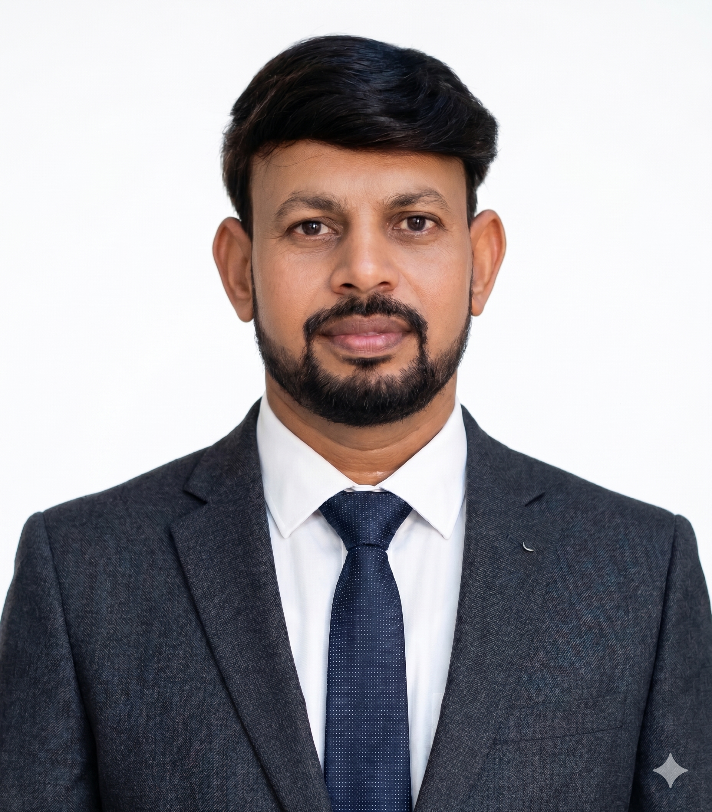

SP'">Academic Profile
Dr. Suresh Palarimath
MSc · MPhil · PhD · Post Doctoral Fellowship
Program Coordinator & Lecturer in Computer Science / IT
University of Technology and Applied Sciences, Salalah, Oman
18+Years Academic Experience
76+Peer-Reviewed Publications
26+Books & Textbooks
14International Patents
$96K+Research Funding
400+Google Scholar Citations
Welcome
Academic, research and teaching profile
PLACEHOLDER — Add your preferred short professional introduction here.
Use this space for a concise overview of your academic experience, research interests, leadership and major contributions.
Explore